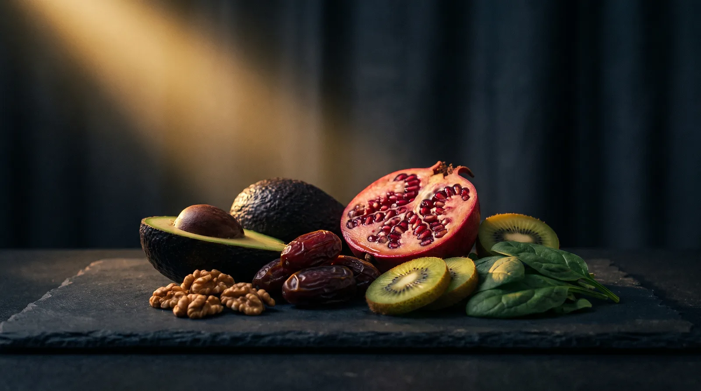

Mythen-Check · Vertiefung zum Reel
10 Ernährungsmythen im Check.
Was stimmt wirklich, und worauf du beim Einkaufen achten solltest.
Im Supermarkt hören wir ständig, was „am meisten" von etwas hat oder „am besten" wirkt. Hier ist die Auflösung aller 10 Mythen. Und weil der nächste Mythos garantiert kommt, bekommst du dazu meine Methode, mit der du künftig selbst erkennst, ob etwas ein Mythos ist.
Von Dr. Lara Vadlau · Longevity Medicine
